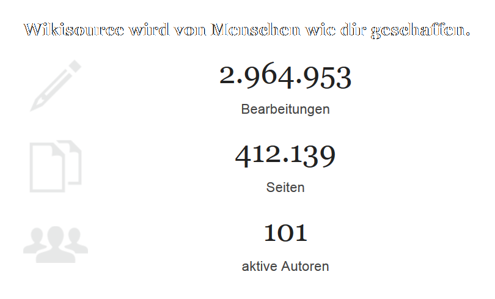
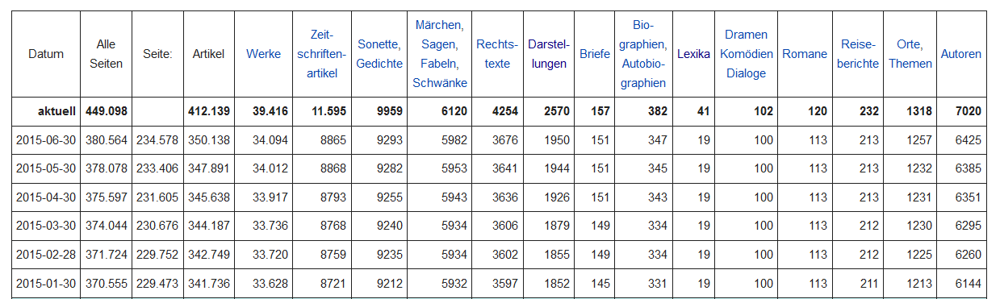
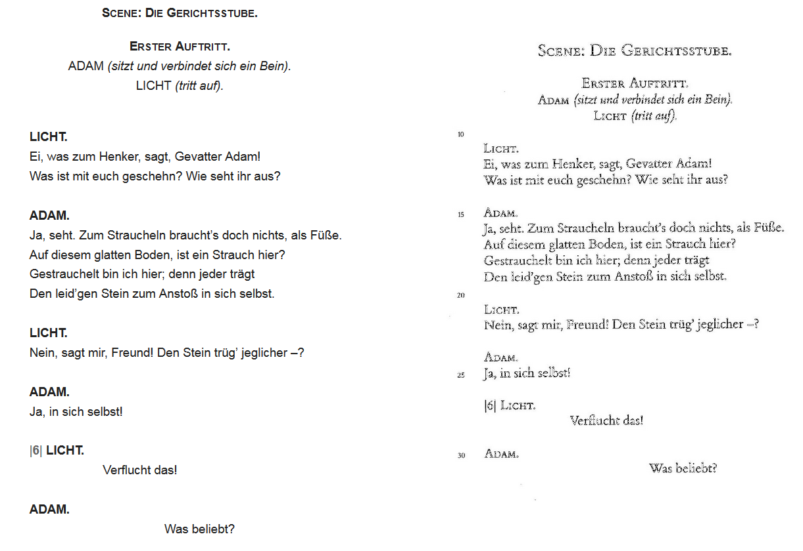
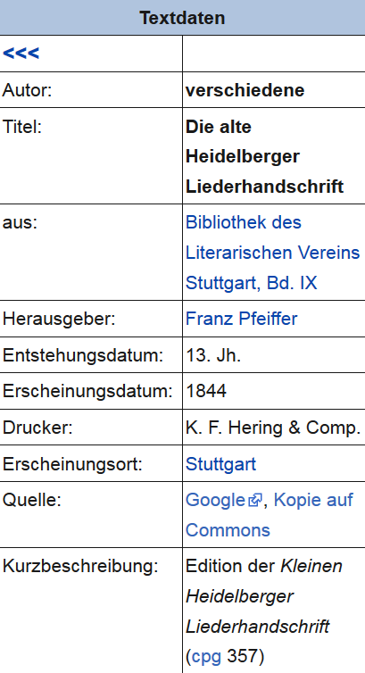
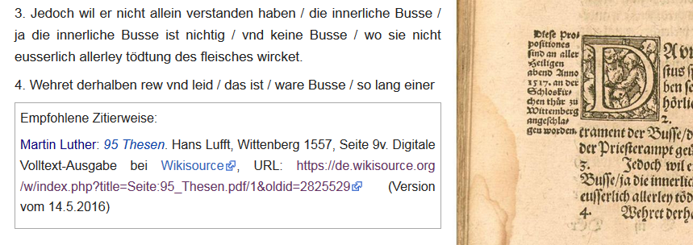

Rezension der Deutschsprachigen Wikisource
Table of Contents
Abstract
The German Wikisource project evolved from a multilingual Wikimedia venture for the digitization of historical text sources. As a sub-project of the Wikimedia Foundation it is substantially based on the non-profit work of voluntarily engaged people. The objective is to digitize German, mostly historical works according to high-standard guidelines and to provide these texts to the public under free licenses. At the moment, the German Wikisource counts 120 active contributors who have digitized about 39,416 works manually or semi-automatically comprising more than 400,000 sub-pages in total. Apart from the the amount of digitized texts, major achievements of the project are the focus on text transcription quality, elaborate documentation and catering to the community of collaborators. In spite of the project’s own scholarly entitlement, there are limitations though for scholarly (out-of-the-box) reuse and there remain desiderata regarding established standards and best-practises for scholarly text digitization und publication. This, however, doesn’t diminish the fact that here a community of volunteers contributes greatly to the digitization of historical works, something scholars of various disciplines might benefit from as well.
Projektkonstellation und Zielsetzung
 
Durch das Engagement der freiwilligen HelferInnen wurde also bis jetzt eine beachtliche Sammlung historischer Quellen im (strukturierten) Volltext zusammengetragen und der Öffentlichkeit unter freien Lizenzen zur Verfügung gestellt. Dabei setzt sich das Projekt ein hohes Ziel:
Wikisource versteht sich als wissenschaftlich fundiertes Qualitätsprojekt, das sich möglichst hohen Standards bei der Textwiedergabe verpflichtet sieht.
Tatsächlich wird in der Selbstbezeichnung von „Wikisource-Editionen“ und „Editionsrichtlinien“ gesprochen (Wikisource:Editionsrichtlinien). Dennoch wendet sich das Projekt aber offenbar in erster Linie an interessierte Laien, was auch in einer möglichst gefälligen Präsentation der Texte resultieren soll.3
In diesem Projekt leistet eine Community von Freiwilligen einen großen Beitrag zur Digitalisierung historischer Werke, von dem auch die Wissenschaft unterschiedlicher Disziplinen zehren kann. Die folgende Betrachtung fragt nach den Möglichkeiten, aber auch den Grenzen des wissenschaftlichen Anspruchs des Projekts und der wissenschaftlichen Nachnutzbarkeit seiner Ergebnisse.
Textauswahl
Prinzipien der Textauswahl
Die Textauswahl erfolgt basierend auf Vorschlägen der Community. Dabei können kurze Texte ohne Absprache verfügbar gemacht werden, während längere Texte (ab 50 Seiten; Wikisource_Diskussion:Projekte) vorab zur Diskussion gestellt werden sollten. Grundlage für die Textauswahl ist dabei das Interesse potentieller BearbeiterInnen, die freie Verfügbarkeit geeigneter Vorlagen sowie die Durchführbarkeit und Abschließbarkeit des Projekts (z. B. durch ein ausreichend ausgebildetes und starkes Team von MitarbeiterInnen). Das „System“ wird getragen von der Voraussetzung, dass für die Unterstützung bei der Textdigitalisierung im eigenen Projekt auch eine äquivalente Gegenleistung in den Projekten anderer erbracht werden soll.4
Für die Auswahl der Vorlage wurden Richtlinien verfasst, in welchen die Erstausgabe oder Ausgabe letzter Hand, eine andere Ausgabe, die „in der Forschung als akzeptabel gilt“ (Wikisource:Textgrundlage) oder eine zuverlässige Edition des Textes (ohne Normalisierungen) als Textgrundlage empfohlen wird. Auch wenn damit kein einheitliches Auswahlkriterium formuliert wurde, bieten die Richtlinien doch eine lockere Orientierung und Grundlage für weitere Diskussionen auf den entsprechenden Seiten. Es ist außerdem möglich, dass „mehrere Versionen eines Textes gleichberechtigt dokumentiert werden“ (Wikisource:Über_Wikisource).
Einen inhaltlich oder zeitlich begründeten Sammlungsschwerpunkt gibt es nicht, sondern der Fokus liegt auf „attraktive[n] oder seltene[n] Texte[n] [...], die anderweitig im Internet nicht oder nicht in ausreichender Qualität im Volltext zugänglich sind“ (Wikisource:Über_Wikisource). Zeitlich reichen die Quellen von der jüngeren Geschichte bis in die althochdeutsche Zeit (z. B. Wessobrunner_Gebet). Auch historische Übersetzungen können als Quellen eingebracht werden.
Dass die BearbeiterInnen also relativ frei entsprechend ihren Interessen Texte wählen können, ist der Bereitschaft zur Mitarbeit sicherlich zuträglich. Daraus ergibt sich jedoch eine opportunistisch zusammengestellte Textsammlung,5 die ggf. für die Nachnutzung in ihrer Zusammensetzung kritisch gesichtet und neu gefiltert bzw. zusammengestellt werden muss und für deren Beurteilung die Dokumentation ausführlicher Metadaten von wesentlicher Bedeutung sind.6
Textaufbereitung und Annotation
Metadaten
Jeder Titel der Wikisource erhält ein festgelegtes Set an Metadaten, das die wesentlichen Aspekte umfasst: Titel, Autor, Entstehungszeit und -ort, Erscheinungsdatum, etc. (Vorlage:Textdaten). Zu überlegen wäre die Einführung einer Metadatenkategorie „Sprache“, welche die Sprache des transkribierten Textes eindeutig bestimmt. Zwar gibt es eine Kategorie „Sprache“; diese bezieht sich jedoch auf die Sprache des Originals.7 Gerade im Fall von Übersetzungen und Editionen historischer Texte mit neuhochdeutschem Vorwort wäre eine deutlichere Differenzierung hilfreich.
Meist fehlt ein eindeutiger Hinweis auf das physische Exemplar, das der Transkription bzw. den Bilddateien, auf denen sie basiert, zugrundegelegt wurde. Die Angabe der Quelle erfolgt zwar konsequent durch Verlinkung des zugrundeliegenden Faksimiles, jedoch lassen sich anhand des Faksimiles bzw. des Links Aufbewahrungsort und Signatur häufig nicht mehr nachvollziehen. Der Rückbezug zum physischen Original gestaltet sich daher manchmal schwer (z. B. Hildebrandslied). Teilweise transportieren die Anbieter der Bilder (z. B. Wikimedia Commons) diese Informationen bereits nicht (vgl. z. B. Max_und_Moritz). Das Problem potenziert sich, wenn die gescannte Ausgabe wiederum eine Nachbildung des Originaldrucks darstellt, etwa im Fall von Faksimileausgaben (z. B. Die_Herren_Gehülfen_im_Buchhandel) oder Editionen (z. B. Der_zerbrochene_Krug), deren physischer Ort und physische Vorlage über die gescannten Seiten jeweils nicht identifiziert werden. Es gibt auch positive Beispiele, z. B. Wessobrunner_Gebet, wo allerdings der entsprechende Nachweis (in Ermangelung eines eigenen Metadatenfeldes) im Feld „Herkunft“ erbracht wurde. Die Einführung eines eigenen Metadatenfeldes für diese Angabe wäre aber m.E. zu erwägen.8
Transkriptionsrichtlinien
Es wurden einige übergeordnete Transkriptionsrichtlinien festgelegt (Wikisource:Editionsrichtlinien), die durch eigene Kriterien für jedes Projekt ergänzt werden können. Dieses Vorgehen ist angesichts der Heterogenität der Quellen sinnvoll. Unschön ist nur, dass sich die projekteigenen Kriterien an unterschiedlichen Orten befinden können (z. B. auf der Index-Seite oder mit auf der Seite des Quellentextes) oder auch ganz fehlen können (z. B. Hildebrandslied), wodurch NutzerInnen nur die wenigen und eher allgemeinen Hinweise der projektübergreifenden Transkriptionsrichtlinien erhalten.
Für die wissenschaftliche Nachnutzung besonders hervorzuheben ist der Anspruch der Wikisource, eine zuverlässige Erfassung der Quelle zu gewährleisten. Laut Selbstaussage sieht man sich „möglichst hohen Standards bei der Textwiedergabe verpflichtet.“ Normalisierungen und Modernisierungen der historischen Texte sollen grundsätzlich vermieden werden. Sämtliche Texte werden in Text und Bild bereitgestellt, „[u]m das Korrekturlesen zu erleichtern und Lesern die Kontrolle des Wortlauts der Vorlage zu ermöglichen“ (Wikisource:Über_Wikisource). In diesem Punkt folgt das Projekt konsequent dem Prinzip der wissenschaftlichen Überprüfbarkeit. Darüber hinaus wird jeder Text mehrfach von verschiedenen Personen Korrektur gelesen, um Fehler der Transkription zu minimieren. Besonders schwierige Textpassagen (fremd- oder altsprachliches Material, schwer leserliche Stellen in Handschriften) können außerdem zur Begutachtung durch Experten gesondert aufgelistet werden (Wikisource:Spezialisten_gesucht). Hier kann kaum noch mehr Aufwand für die Qualitätssicherung verlangt werden.
Das Gebot der Nähe zur Quelle wird allerdings beschränkt durch (1) die Regel, „eine ‚pixelgenaue‘ Übernahme des Layoutes der Vorlage“ zu vermeiden, was sicherlich im gegebenen Projektkontext vernünftig ist, und (2) den Wunsch, der Lesbarkeit und einfachen Handhabung des Textes den Vorrang zu geben, was wiederum zu aus philologischer Sicht diskutablen Entscheidungen führt: Warum wird etwa die Abkürzung „dz“ beibehalten, Nasalstrich aber aufgelöst? Warum wagt man stillschweigende Auflösungen von Worttrennungen und „Interpunktionsfehlern“, obgleich solche Eingriffe leicht zu den unerwünschten Modernisierungen führen können? Spricht „das komfortable Lesen an Computern“ (Wikisource:Editionsrichtlinien) wirklich gegen die grundsätzliche Unterscheidung der s-Grapheme (ſ, s)?
Das Ausmaß editorischer Nähe zur Quelle ist auch innerhalb der Wikisource-Community durchaus ein Diskussionspunkt (vgl. z. B. Diskussion:Hildebrandslied) und lässt sich gerade angesichts der inhaltlichen und historischen Breite sowie der Offenheit des Projekts hinsichtlich wissenschaftlicher Disziplinen wohl kaum abschließend lösen.
Die Möglichkeit zur Diskussion ist auf jeder Seite der Wikisource gegeben, wird allerdings eher zurückhaltend genutzt – häufig wurde die Diskussionsseite zu einem Werk gar nicht eröffnet, ansonsten sind Diskussionen in der Regel recht kurz und zielorientiert. Dies zeigt, dass die Community hier nicht der Gefahr erliegt, sich in Fragen zur Methodik zu verzetteln, sondern den Weg pragmatischer Entscheidungen präferiert.9 Manchmal wäre etwas mehr Transparenz zur Grundlage bestimmter editorischer Entscheidungen zwar wünschenswert (z. B. Ein_kurtzweilig_lesen_von_Dyl_Vlenspiegel: Warum werden Nasalstrich, d', v‘, Abkürzungen im Allgemeinen aufgelöst, aber nicht wz und dz?). Generell ist aber davon auszugehen, dass das Projekt von der Zielorientiertheit an dieser Stelle wesentlich profitiert.
Ansonsten bieten die Diskussionen eine interessante Möglichkeit, den Prozess der Textentstehung teilweise nachzuvollziehen. So enthält z. B. Der_Ackermann_aus_Böhmen eine reichhaltige Diskussionsseite (Diskussion:Der_Ackermann_aus_Böhmen) und wurde auch hinsichtlich der Textqualität, welche die verfügbaren BearbeiterInnen erreichen könnten, im Rahmen der Projektdiskussionen besprochen.10
Annotationsformat und Annotationsrichtlinien
<poem>-Tag als solche gekennzeichnet. Das Inventar an
Auszeichnungen, welches die Wikisyntax bietet, wird bei der Textaufbereitung
jedoch nicht immer ausgeschöpft; oftmals beschränkt es sich auf die
Abbildung von Layouteigenschaften (werden z. B. Überschriften nicht eigens
als solche gekennzeichnet o. ä.; z. B. 95_Thesen). Darüber
hinaus ist es möglich, dass abhängig von individuellen Editionsrichtlinien
Layoutmerkmale gegenüber der Vorlage ergänzt werden. So wurde in den
Editionsrichtlinien zu Der_zerbrochne_Krug festgelegt, dass
Sprecher entgegen der Vorlage fett wiedergegeben werden (Abb. 3).
Überraschend ist, dass die Auszeichnungsrichtlinien selbst die Einheitlichkeit der Auszeichnung über Texte hinweg nicht einfordern, wenn etwa Kommentare der Wikisource-BearbeiterInnen nur dann als solche gekennzeichnet werden sollen, wenn es zusätzlich historische Anmerkungen in der Quelle gibt (Wikisource:Editionsrichtlinien).
Die (behutsame) Kommentierung des Textes ebenso wie der Nachweis editorischer Eingriffe in den Text erfolgt seitenweise in Form eines Fußnotenapparats, der von einem ggf. vorhandenen Fußnotenapparat der Vorlage abgetrennt ist (Wikisource:Kommentieren).13
Hinsichtlich der Textstrukturierung geht die Wikisource über die
Möglichkeiten der klassischen Buchausgabe also kaum hinaus. Die
Möglichkeiten des digitalen Mediums, in dem formale Beschränkungen
wesentlich reduziert sind und der Fokus vielmehr auf inhaltlichen
Auszeichnungen liegen kann, werden nicht ausgeschöpft. Dies ergibt sich zum
einen aus der Wiki-Syntax, die wesentlich auf Aspekte der typographischen
Textgestalt beschränkt ist, zum anderen aus dem Umstand, dass Quellen
bisweilen seitenweise wiedergegeben werden, sodass eine Wikisource-Seite
einer Buchseite im zugrundeliegenden Druck entspricht (z. B.
Die_Gemälde-Galerie_des_Grafen_A._F._v._Schack, S. 20). Die Strukturierungen
bleiben also zwar meist auf das Layout bezogen, folgen dabei aber
einheitlichen Regeln, sodass das gewählte Markup die Konvertierung der
vorhandenen Strukturen in andere (standardisierte) Formate wie z. B. XML
ermöglicht. Für eine Konvertierung nach TEI-XML, welche das Potential dieses
Formats zumindest grundlegend berücksichtigt (z. B. hierarchische
<div>-Strukturen mit beinhaltet), wäre dann jedoch
Nacharbeit hinsichtlich der nicht vorhandenen, insbesondere der inhaltlichen
Strukturierungen nötig.14
Systematisierung
Die Systematisierung der deutschsprachigen Wikisource wird im Folgenden genauer betrachtet, da dieser Bestandteil des Projekts einen wichtigen Einstiegspunkt und einen Zugang zu den Texten darstellt.
Für den systematischen Einstieg werden sämtliche Texte mit Kategorien versehen. Diese ergeben sich vor allem aus Informationen zu 5-6 Facetten (Fachgebiet, Entstehungszeit und -ort, Sprache, Textgattung, [optional:] Herstellungsform) sowie darüber hinaus aus weiteren Informationen zu Thema, Bearbeitungsstand, u. a. Während unter den Facetten die Herstellungsform optional ist, sind alle anderen Facetten mit mindestens einem Wert zu befüllen. Für das Fachgebiet und die Textgattung sind außerdem Mehrfachzuordnungen möglich. Die Zuordnungen erfolgen jeweils im bottom-up-Prinzip, d.h. nicht jede mögliche Kategorie ist vorhanden, sondern andersherum gibt es keine Kategorien, denen nicht auch ein Text zugeordnet werden konnte. Somit muss die Systematik zwar so lange unvollständig bleiben, wie nicht aus jedem Bereich Texte akquiriert wurden, dafür bleibt sie aber immer eng rückgebunden an die Quellen und kann nicht zum Selbstzweck geraten.
Facette „Fachgebiet“
Als Grundlage für die systematische Wahl eines Fachgebiets dient die Göttinger Online-Klassifikation,15 „ohne diese aber detailgetreu abzubilden“ (Anleitung_für_die_Kategorisierung). Diese Klassifikation umfasst insbesondere zeitgenössische Wissenschaftszweige und Sachgebiete ohne dezidiert historische Perspektive. Das heißt zum einen, dass die Fach- und Sachgebiete ohne Rücksicht auf ihre historische Entwicklung synchron nebeneinander stehen (z. B. Computing neben Mathematics, Maschinenbau neben Bergbau, Brettspiele neben Videospiele), zum anderen, dass bestimmte historische Wissensgebiete, die nicht mehr existieren, nicht realisiert sind (z. B. Alchemie). Darüber hinaus scheint die Klassifikation nicht immer ganz stimmig zu sein: So existiert eine Hauptkategorie „Sport“ mit Unterkategorie „Sportwissenschaft“, aber keine Hauptkategorie „Religion“ oder „Literatur“. Die Kategorie „Kunst“ enthält die Subklasse „Musikwissenschaft“, jedoch keine Subklassen „Literatur“ oder „Musik“.
Es ist allerdings nicht von der Hand zu weisen, dass bislang keine vollständig in sich stimmige Klassifikation zu Textsorten und Fachgebieten existiert, die zudem in ihrem Umfang und ihren Ambiguitäten so beschränkt ist, dass sie im Kontext der Wikisource problemlos nachgenutzt werden könnte.16 Vielleicht könnte die Textsortenklassifikation der Arbeitsgemeinschaft Alte Drucke (AAD)17 hier mit in Betracht gezogen werden, die jedoch ihrerseits auch Unstimmigkeiten enthält.
Unstimmigkeiten wie die genannten werden allerdings zum einen durch den bottom-up-Ansatz, zum anderen durch die gelegentliche Lösung von der zugrundegelegten Klassifikation in der Wikisource-Systematik teilweise aufgelöst. So werden etwa fehlende Kategorien wie „Musik“ als Hauptkategorie und „Waffenkunde“ als Subkategorie zur „Technik“ eingeführt. Die BearbeiterInnen sind dabei angehalten, solche ‚Neuzugänge‘ zunächst an geeigneter Stelle zur Diskussion zu stellen.18 Es bleiben jedoch auch in der resultierenden Wikisource-Systematik problematische Aspekte:
- Wissenschaftszweig vs. Sachgebiet: Die wissenschaftlichen Disziplinen stehen gleichberechtigt neben Sachgebieten und interferieren teilweise mit diesen. So existieren die Hauptkategorien „Musik“ und „Darstellende Künste“, aber nicht die Hauptkategorie „Literatur“. Folglich wurde die Belletristik der Kategorie „Deutsche Philologie“ zugeordnet, was weniger das „Fachgebiet“ des jeweiligen Textes als vielmehr ein Nachnutzungsszenario beschreibt. Ähnliches gilt für die Kategorie „Kulturgeschichte“, die auch feuilletonistische Texte zu kulturellen Aspekten enthält (z. B. Ein_Töpfchen_Bier). Für die Belletristik wäre wohl eine Kategorie „Literatur“ oder „Schöne Literatur“ analog zu den o.g. Kategorien „Musik“ und „Darstellende Künste“ zu erwägen.
- Zuordnung mindestens eines Fachgebiets: Die Bedingung (constraint), mindestens ein Fachgebiet zu vergeben, resultiert bisweilen in ungewöhnlichen Zuordnungen. So wurde ein Artikel der Gartenlaube zur „Bücher-Preisermäßigung“ mit den Kategorien „Sprach- und Literaturwissenschaft allgemein“ sowie „Geographie“ versehen (Bücher-Preisermäßigung). Auch andere Sachtexte werden Wissenschaften zugeordnet (z. B. der Reisebericht Aus_dem_Harz und der feuilletonistische Text Für_Die_im_Theater_und_Concert den „Bevölkerungs- und Sozialwissenschaften“), was wiederum eher im Bereich der intendierten Nachnutzung zu verorten ist. Da nicht sämtliche Themen und Sachgebiete durch die zugrundeliegende Systematik abgedeckt werden, wäre hier eventuell die Abschaffung dieser entsprechenden Bedingung zu erwägen.
- Untergliederung: Dem Bottom-up-Ansatz scheint auch geschuldet, dass die Hauptkategorien unterschiedlich stark untergliedert sind. Eine vergleichsweise starke Differenzierung findet sich bei den Kategorien „Geschichte“, „Geowissenschaften“ und „Biologie>Zoologie“. Dagegen wurden die „Religionswissenschaften/Theologie“ sowie die „Rechtswissenschaft“ kaum untergliedert. Der „Theologie“ sind in der Göttinger Systematik sehr viele Unterkategorien zugeordnet, während sich in der Wikisource-Systematik nur die Subklassen „Aberglaube“ und „Israelitisch-jüdische Religion“ finden, sämtliche christlichen Predigten und Gebete hingegen z. B. allgemein unter Theologie eingeordnet sind. Hier wäre angesichts der Differenziertheit religiöser historischer Literatur eine feinere Untergliederung ratsam.
Facetten „Entstehungszeit“ und „Entstehungsort“
Ab dem 18. Jh. soll bezüglich der Entstehungszeit eine genauere Unterteilung in Jahrzehnte vorgenommen werden.19 Faktisch wird dies auch bereits für die Texte des 17. Jhs. durchgeführt, und der Nutzer darf fragen, warum nicht für die gesamte Zeit ab dem Beginn des Buchdrucks eine solche Unterteilung sinnvoll wäre. Mit dem Buchdruck stieg bekanntlich auch die Buchproduktion stark an (vgl. z. B. Beutin u. a. 2001: 69). Gerade auch das 16. Jh. ist z. B. reich an Flugschriften und dabei durch historisch-politische Faktoren so stark geprägt und in sich gegliedert, dass eine genauere zeitliche Einordnung auch Einblicke in die geistesgeschichtliche Verortung eines Werks erlauben würden (vor-/nach-reformatorische Zeit, Zeit ab dem Schmalkaldischen Krieg, etc.).

Komplexere Sachverhalte lassen sich jedoch so nur schwer abbilden. Für das Drama „Der zerbrochene Krug“ (Der_zerbrochne_Krug) wurde eine Edition von 1997 digitalisiert, die sich auf die Druckausgabe von 1811 bezieht. Der Text entstand 1806. Die Metadaten geben nun die Jahre 1806 (Entstehungsdatum) und 1997 (Erscheinungsdatum) an, jedoch nicht das Jahr des Drucktextes, auf dem die Quellenausgabe eigentlich beruht, der hier also transkribiert wurde. Aus linguistischer Sicht wäre dies jedoch die relevanteste Angabe, denn sie gibt Auskunft über den Sprachstand, der in dem Text produziert wurde. Für die Edition der Goldenen Bulle in Frühneuhochdeutscher Sprache (Goldene_Bulle_(Frankfurter_Übersetzung)) wurde der ähnliche Fall innerhalb der Kategorie „Entstehungsdatum“ näher erläutert:
„Entstehungsdatum: 1356, frühneuhochdeutsche Übersetzung spätestens vor Mai 1365 Erscheinungsdatum: 1897“21
Weiterhin gibt es Texte mit einer vermeintlichen Entstehungszeit in vorchristlichen Jahrhunderten. Diese Datierungen beziehen sich jedoch auf die antiken Vorlagen späterer Übersetzungen (Goldene_Verse 22, Jannes_und_Mambres 23, Didos_Tod 24). Diese Eigentümlichkeit der Titel-Metadaten wird fortgeführt durch die „Kategorie:Entstehungszeit“, die noch zusätzliche solcher Zuordnungen beinhaltet und für den ersten Sucheinstieg über die Entstehungszeit ausgewertet wird (z. B. Aus_Shakespears_Much_ado_about_nothing). Eine Präzisierung, dass hier die Entstehungszeit der Vorlage gemeint ist, wäre vonnöten.
Für die Angabe des Entstehungsorts werden die Grenzen der historischen Territorien (in vernünftigem Maß) mit einbezogen.25 So werden in der Kategorie „Historisches Territorium“ z. B. „DDR“, „Deutscher Bund“, „Deutsches Reich“, „Heiliges Römisches Reich“26 oder „Römisches Reich“ geführt. Was als „Entstehungsort“ übertitelt ist, gibt jedoch nicht immer den Ort der Entstehung eines Werks wieder, sondern bisweilen vielmehr den Ort der Entstehung einer ggf. anderssprachigen Vorlage, die in der Wikisource gar nicht wiedergegeben ist (Kópakonan 27), den Ort, über den in einem Text berichtet wird (Ein_Besuch_bei_dem_persischen_Hofe 28) oder der für ein Werk auf andere Weise wesentlich ist (Italische_Vignetten 29). Die Vorgabe für den Entstehungsort lautet zwar: „angegeben wird der Entstehungsort des Originals“.30 Diese Regel wurde jedoch in der konkreten Umsetzung aufgeweicht. Auch hier wäre eine größere Trennschärfe erfreulich; wenn dies nicht geleistet werden kann, müsste wohl für den Terminus des „Entstehungsorts“ eine allgemeinere Bezeichnung gefunden werden.
Facetten „Textgattung“ und „Herstellungsform“
Interessant ist die Unterteilung der Facetten in „Gattung“, „Fachbereich“ und „Herstellungsform“. Dadurch wird die Problematik der Benennung von Textsorten mit alltagssprachlichen Textsortenbegriffen31 abgeschwächt, weil diese in dem übergeordneten Raster vorsortiert werden. Die Gattung „Plakat“ wäre allerdings wohl eher der „Herstellungsform“ als der „Textgattung“ zuzuordnen.32
Gut nachvollziehbar ist auch die Regel, dass die Facetten „Fachbereich“ und „Gattung“ jeweils mehrfach vergeben werden können.33 Somit kann dem Fall der Textsortenmischung oder sonstigen Überschneidung von Kategorien problemlos begegnet werden, ohne dass Sammelkategorien neu eröffnet werden müssen. Fraglich ist, warum nicht auch bei der „Herstellungsform“ Mehrfachnennungen explizit erlaubt werden. Hier werden z. B. „Einblattdrucke“ und „Flugschriften“ benannt, die einander jedoch nicht ausschließen bzw. nicht streng voneinander abgrenzbar sind. Im Falle der „Zeitung“ und „Zeitschrift“ von einer Herstellungsform zu sprechen ist ungewöhnlich, aber wohl nicht abwegig. Besonders fragwürdig ist jedoch, warum die Facette der Herstellungsform nur gelegentlich vergeben werden soll und zwar:
Herstellungsform - Diese Facette ist optional. Diese Facette wird nur eingefügt, wenn auch die in Wikisource verwendete Textgrundlage einer der Herstellungsformen entspricht. So wird ein Brief, der uns im Original als Handschrift vorliegt in die Kategorie:Handschrift einsortiert. Würde uns derselbe Brief als Ausgabe in einem gedruckten Editionsband vorliegen, dann würde diese Facette nicht vergeben werden.
Community-basiertes Arbeiten
Anreize für die Mitarbeit
Wikisource lebt von einer Community an ehrenamtlich Engagierten, die Texte für die Allgemeinheit bereitstellen wollen. Um Interessierte zur Mitarbeit anzuregen, wird die Mitarbeit auf unterschiedliche Weisen intensiv unterstützt, werden Anreize geschaffen und der Ersteinstieg möglichst vereinfacht.
So ist es möglich, eigene Transkriptionen in die Wikisource einzubringen und der Qualitätskontrolle durch die Community anheimzustellen sowie größere Projekte vorzuschlagen und durchzuführen. Der Motor hierbei ist das Prinzip der Gegenleistung: Für die Mithilfe anderer in den eigenen Projekten ist ein äquivalenter Umfang eigener Mithilfe in anderen Projekten gefordert.
Der Neueinstieg in die Wikisource-Gemeinschaft wird erleichtert durch Schritt-für-Schritt-Anleitungen und umfangreiche Dokumentationen zu den einzelnen Aspekten der Textaufbereitung (Textauswahl und Editionskriterien, Kodierung der Metadaten und Textdaten, Kategorisierung, Interaktion mit der Wikisource-Community) sowie durch Vorlagen für bestimmte Kodierungen (z. B. Metadatensätze). Auf der „Spielwiese“ können neue Nutzer die Funktionalitäten der Wikisource für sich austesten. Eine Vielzahl an unterschiedlichen Diskussionsforen ermöglicht den Kontakt unter den MitarbeiterInnen, so etwa das „Skriptorium“, die „Technikwerkstatt“, die „Auskunft“ oder die Option eigener Diskussionsseiten auf allen Wikisource-Seiten. Selbst ein eigener Chat-Kanal wurde eingerichtet. Interessant sind darüber hinaus die „Korrekturen des Monats“ bzw. „Projekte des Monats“, die eine Anregung darstellen, wo Engagement nützlich und nötig wäre.34
Das Dickicht der Dokumentations- und Hilfeseiten ist vielleicht auf den ersten Blick schwer zu durchschauen und selbstkritisch wird von der „(mitunter mangelhaften) Vernetzung“ gesprochen (Wikisource:FAQ). Jedoch sind die Hilfeseiten damit so umfassend, dass kaum eine Frage zum allgemeinen Procedere offen bleibt. Der Nutzer, der sich bereitwillig auf dieses Angebot einlässt, wird in beispielhafter Weise umfassend informiert und mit vertretbarem Aufwand in die Lage versetzt, selbständig an dem Projekt mitzuarbeiten. Orientierung innerhalb der Hilfeseiten bieten zudem verschiedene Überblicksseiten, z. B. auch die FAQs.

Qualitätssicherung
Die Qualitätssicherung wird, wie bereits erwähnt, für die Textdaten sehr ernst genommen. Das Verfahren der doppelten Korrektur, das Vorhandensein allgemeiner Editionskriterien und ein etabliertes Verfahren bei der Dokumentation werkspezifischer Aufbereitungsrichtlinien ermöglichen die hohe Qualität der transkribierten Texte.
Wünschenswert wären entsprechende, stärkere Kontrollinstanzen bei den Metadaten inkl. der Kategorisierungen, denn die Metadaten sind als Ersteinstieg zu den Quellen kaum zu überschätzen. Hier kommt es zwischen den Quellen zu Uneinheitlichkeiten und Unsicherheiten bei der Vergabe von Kategorien, was die Filterung nach Texten fehleranfällig macht. Stellenweise wären Schärfungen der Definition von Metadatenfeldern oder deren weitere Ausdifferenzierung zu überlegen (s. oben). Angemessen wäre außerdem auch hier vielleicht das Verfahren der doppelten Korrektur.
Nutzung und Nachnutzung
Lizensierung
Die Texte der Wikisource werden erfreulicherweise sämtlich unter freien Lizenzen (GFDL, CC-BY, CC-BY-SA) oder als gemeinfreies Material angeboten. Somit wird die Nachnutzung nicht oder kaum eingeschränkt.
Über die Dokumentationsseiten wird zudem ein Bewusstsein für lizenzrechtlich angemessene Vorlagen geschaffen. Die bereitgestellten Quellen oder Quelleneditionen sollten gemeinfrei oder frei lizensiert sein. Die Aufnahme geschützter Texte unter freier Lizenz bedarf der Vorabdiskussion. Auch Bildmaterial, das in das Angebot eingebunden wird, soll hinsichtlich der Bildrechte überprüft werden.
Zugänglichkeit und Nutzung über die Plattform

Eingebettet in die Texte sind oftmals Abbildungen, welche den Textfluss auflockern sollen:
Tatsächlich ergibt sich auf diese Weise ein angenehmes Erscheinungsbild der Texte.Wikisource möchte nicht nur riesige langweilige Textwüsten liefern, die kein Mensch lesen mag. Daher ist es ausdrücklich erwünscht, die Quellentexte, aber auch die Autoren-, Orts- und Themenseiten mit multimedialen Inhalten anzureichern.
Ungewöhnlich ist, dass die URLs der Subseiten eines Werkes nicht
regelmäßig sein müssen. So ist die Hauptseite der Schedelschen Weltchronik
unter der Kennung Schedel’sche_Weltchronik
35
erreichbar, die „abgeleiteten Seiten“ heißen jedoch dann:
Die_Schedelsche_Weltchronik_(deutsch):[Seitenzahl].36 Zur Hauptseite
Curieuse_und_sehr_wunderbare_Relation,_von_denen_sich_neuer_Dingen_in_Servien_erzeigenden_Blut-Saugern_oder_Vampyrs
wurden Unterseiten mit Zahlen-Kennung vergeben, z. B.:
Seite:75-705460E_001.jpg. Die Leseansicht zu
Seite:Der_zerbrochene_Krug_(Kleist)_008.jpg findet sich
unter der Kennung Der_zerbrochne_Krug, der auch die Indexseite
folgt: Index: Der_zerbrochne_Krug.
Die Kennungen zu Werken können in ihrer Zusammensetzung und
Länge stark variieren. Die festgelegten Namenskonventionen scheinen hier
nicht immer zugrunde gelegt worden zu sein (Wikisource:Namenskonventionen).
Als Kennungen können (nahezu) ungekürzte historische Titel dienen, z. B.:
Vertrag_nach_entstandenem_Auflauf_zwischen_dem_Rathe_zu_Schweinfurt_an_einem,_und_dann_der_Gemeinde_daselbst_andern_theils_durch_derselben_Reichsamptmann_und_andere_verordnete_Kaiserliche_Commissarien_aufgericht
ebenso wie rekonstruierte ausführliche Titelangaben, z. B.:
Die_vier_Rheinischen_Kurfürsten_und_Herzog_(Kurfürst)_Rudolf_III_von_Sachsen_verbünden_sich_zur_Wahl_eines_neuen_Römischen_Königs
gekürzte historische Titel, z. B.: Von_abtuhung_der_Bylder oder
„Populartitel“, z. B.: 95_Thesen.37

Die Nutzung der Texte auf der Wikisource-Seite wird erleichtert durch Seiten zum systematischen Einstieg, welche aufgrund von Metadaten-Informationen generiert sind. Hierbei ist der Einstieg über Themen, Autoren, Orte, Textsorten etc. möglich (Näheres s. oben). Darüber hinaus wird eine Volltextsuche angeboten, die auf verschiedene Weisen anpassbar und über jede Seite erreichbar ist. Interessant und hilfreich ist in diesem Zusammenhang auch das Angebot PetScan,39 das eine leicht bedienbare Oberfläche für die Recherche u. a. in der deutschsprachigen Wikisource anbietet. Im Gegensatz zum systematischen Einstieg auf der Wikisource-Seite, der die Filterung nach jeweils genau einer Kategorie ermöglicht, können mit PetScan-Kategorien in Kombination abgefragt werden, sowohl in Koexistenz (X UND Y) als auch einander ausschließend (X ABER NICHT Y).40 Für jede Abfrage wird eine PID erzeugt, mittels derer die Abfrage auch später abgerufen werden kann.41
Für die Zitation von Werken und Seiten der Wikisource wird für jede Webseite der Plattform eine Versionshistorie erstellt, auf die jederzeit zurückgegriffen werden kann. Die Zitation kann also für eine ganz bestimmte Version erfolgen. Die jeweiligen URLs enthalten die eindeutige Versionsnummer, die somit persistent identifiziert werden kann.
Download und Nachnutzung
Für jede Seite ist ein Download in verschiedenen Formaten (als PDF, EPUB, HTML, ad hoc Druckversion) möglich. Dabei kann z. B. das annotierte HTML für eine Transformation in andere Formate zugrundegelegt werden, sodass die Annotationen aus der Wikisyntax auch im Download weiter transportiert werden. Schön wäre zusätzlich die Möglichkeit, ein komplettes Werk in Wikisyntax direkt herunterzuladen. Jedes Werk („multi-part item“) kann darüber hinaus mithilfe der Funktion „Buch erstellen“ per Mausklick in Gänze als komfortabel lesbares PDF oder reine Textdatei erstellt werden (diese Funktion wird momentan überarbeitet). Leider fehlen beiden Formaten ebenso wie dem PDF-Download der Seite Angaben zu den Metadaten. Die EPUB-Fassung enthält zwar einen Hinweis auf die Wikisource sowie einige Titelinformationen, jedoch ebenfalls nicht die vollständigen Metadaten.
Eine eigene OAI-Schnittstelle für die Metadaten wurde seinerzeit diskutiert, jedoch bislang offenbar nicht umgesetzt (Wikisource:Metadaten, Abschnitt: #OAI-Schnittstelle). Über die Wikimedia sind außerdem regelmäßige Datenbank-Dumps unterschiedlichen Umfangs erhältlich (aktuelle Versionen aller Wikisource-Seiten, Versionshistorien, nur Titelseiten, Statistiken, etc.), welche zweimal monatlich erzeugt werden.42
Fazit
Begutachtet wurde hier ein umfangreiches Projekt, das sich im Prinzip aus vielerlei individuellen Projekten zusammensetzt, für die sich viele Freiwillige engagieren. Es ist bei dieser Konstellation schwierig, ein umfassendes i. S. v. vollständiges Bild des Projekts zu präsentieren. Vielmehr bleiben die begutachteten Stücke Stichproben und die angeführten Stellen Auszüge und Beispiele aus einem weit umfassenderen Konvolut an Texten.
Dieses Bild spricht einerseits gegen die Rezensierbarkeit dieses Projekts: Fehler bleiben oftmals individuell, Inkonsistenzen sind einer gewissen Freiheit der Bearbeiter geschuldet, die auch dem Wunsch entspricht, Bearbeiter zu finden und weiter zu motivieren. Der Kritiker wäre im Übrigen jederzeit selbst aufgerufen, durch eigenes Engagement zur Verbesserung der Kritikpunkte beizutragen.
Die Leistung des Projekts ist zudem unverkennbar und uneingeschränkt zu konstatieren: Eine große Menge hochwertiger Transkriptionen historischer Texte werden jedermann (der Wissenschaft ebenso wie der Allgemeinheit) zur freien Nutzung und Nachnutzung zur Verfügung gestellt.
Die wissenschaftliche Nachnutzung, die explizit intendiert ist, unterliegt je nach Ausrichtung jedoch einigen Einschränkungen. Während die qualitative Arbeit mit den Einzeltexten über die Wikisource-Plattform und deren Zitation sehr gut unterstützt wird, erscheinen für die quantitative Nutzung der Wikisource-Daten oder die Nachnutzung der Textdaten in anderen Projektkontexten gerade die erwähnten Inkonsistenzen problematisch: Zwar wurden für die einzelnen Schritte der Textausgabe (Wahl von Vorlagen, Gestaltung der Transkription etc.) jeweils Richtlinien angeboten, die Orientierung bieten. Diese sind allerdings recht breit aufgestellt und lassen vergleichsweise viel Raum für individuelle Ausformungen, was einerseits die Texterfassung erleichtert, andererseits die Einheitlichkeit der Texte beeinträchtigt. Die Nutzer sind daher genötigt, jeden nachgenutzten Text hinsichtlich seiner Vorlagen, Metadaten, Transkriptions- und Annotationsspezifika etc. individuell zu prüfen.
Die wissenschaftliche Weiterverwendung der Daten außerhalb der Wikisource-Plattform wird ‚out-of-the-box‘ wohl für die wenigsten Anwendungen möglich sein. Dazu fehlt es auch an wissenschaftlichen Standards (sowohl bei der Text- als auch bei der Metadatenauszeichnung), ggf. an einer wissenschaftlich fundierten Textauswahl und Einschränkung des Materials sowie jedenfalls an einer übergeordneten Kontroll- und Vereinheitlichungsinstanz, die die Einhaltung der Richtlinien und folglich die Homogenität der Sammlung sicherstellt. Hier muss der Nachnutzung eine Evaluation und ggf. Vereinheitlichung der Daten durch die NutzerInnen selbst vorangestellt werden.
Es wäre also zu überlegen, ob das Projekt der Wissenschaft weiter entgegenkommen könnte, z. B. durch die Generierung standardisierter Formate, durch verfeinerte Auszeichnungsrichtlinien, besonders aber im Bereich der Metadaten durch die Etablierung einer zusätzlichen Kontrollinstanz sowie eventuell auch durch die Einführung differenzierterer Kategorisierungen. Im Prinzip stellt sich aber die Frage, ob sich die Wikisource am Ziel der wissenschaftlichen Fundiertheit nicht überhebt. Vielleicht wäre es auch für die Wikisource-Community selbst hilfreicher, sich dem Ziel der hohen Textqualität zu verpflichten, ohne Wissenschaftlichkeit zu verlangen, die teilweise von (philologischen und editionswissenschaftlichen) Laien erbracht werden müsste. Gerade für Texte älterer Sprachstufen werden hier große Hürden aufgebaut, die das Projekt angesichts seiner Grundkonstellation kaum nehmen kann. Auch fehlt dabei der Anschluss an den editionswissenschaftlichen Diskurs.
Die Nachnutzung bestehender Texte ist jedoch nur ein Aspekt dieses Projekts. Viel wesentlicher ist vielleicht, dass hier eine Infrastruktur bereitsteht, die es jedem, auch WissenschaftlerInnen, ermöglicht, die für die eigenen Interessen wichtigen Texte zusammen mit einer Community hochwertig aufzubereiten. Der persönliche Erfolg ist dabei abhängig von dem, was der bzw. die Nutzende an die Community zurückzugeben bereit ist. Die Ergebnisse sind bereits jetzt bemerkenswert gut und könnten durch das Engagement weiterer Freiwilliger noch weiter verbessert werden. Darüber hinaus könnten bereits im Rahmen wissenschaftlicher Projekte entstandene Texttranskriptionen über die Wikisource-Plattform verfügbar gemacht werden, wodurch nicht allein die Sammlung weiter bereichert würde, sondern auch die digitalisierten Werke weiter gestreut und sichtbar werden könnten.
Bibliography
-
95_Thesen: Martin Luther: 95 Thesen. Hans Lufft, Wittenberg 1557. Digitale Volltext-Ausgabe bei Wikisource (Version vom 5.5.2016). URL: https://de.wikisource.org/w/index.php?title=95_Thesen&oldid=2692966. -
Allgemeine_Deutsche_Biographie: Allgemeine Deutsche Biographie, hrsg. von der Historischen Commission bei der königl. Akademie der Wissenschaften, München/Leipzig: Duncker & Humblot, 1875–1912. Digitale Volltext-Ausgabe bei Wikisource (Version vom 7. März 2016). URL: https://de.wikisource.org/w/index.php?title=Allgemeine_Deutsche_Biographie&oldid=2558604. -
Aus_dem_Harz: Verschiedene: Die Gartenlaube (1866). Ernst Keil’s Nachfolger, Leipzig 1866, Heft 35 und 36, S. 543–545 und 564–567. Digitale Volltext-Ausgabe bei Wikisource (Version vom 31.5.2011). URL: https://de.wikisource.org/w/index.php?title=Aus_dem_Harz&oldid=1564307. -
Aus_Shakespears_Much_ado_about_nothing: Verschiedene: Wünschelruthe. Göttingen: Vandenhoek & Ruprecht, 1818, Nr. 3, S. 11–12. Digitale Volltext-Ausgabe bei Wikisource (Version vom 17.10.2015). URL: https://de.wikisource.org/w/index.php?title=Aus_Shakespears_Much_ado_about_nothing&oldid=2453755. -
Bücher-Preisermäßigung: Verschiedene: Die Gartenlaube (1866). Ernst Keil’s Nachfolger, Leipzig 1866, Heft 6, S. 96. Digitale Volltext-Ausgabe bei Wikisource (Version vom 16.4.2014). URL: https://de.wikisource.org/w/index.php?title=B%C3%BCcher-Preiserm%C3%A4%C3%9Figung&oldid=2186361. -
Curieuse_und_sehr_wunderbare_Relation,_von_denen_sich_neuer_Dingen_in_Servien_erzeigenden_Blut-Saugern_oder_Vampyrs: Curieuse und sehr wunderbare Relation, von denen sich neuer Dingen in Servien erzeigenden Blut-Saugern oder Vampyrs, aus authentischen Nachrichten mitgetheilet, und mit Historischen und Philosophischen Reflexionen begleitet. [S.l.]: , 1732. Digitale Volltext-Ausgabe bei Wikisource (Version vom 2.5.2012). URL: https://de.wikisource.org/w/index.php?title=Curieuse_und_sehr_wunderbare_Relation,_von_denen_sich_neuer_Dingen_in_Servien_erzeigenden_Blut-Saugern_oder_Vampyrs&oldid=1801080. -
Didos_Tod: Friedrich Schiller (Hrsg.): Neue Thalia. Erster Band welcher das erste bis dritte Stück enthält. Georg Joachim Göschen, Leipzig 1792. Digitale Volltext-Ausgabe bei Wikisource(Version vom 21.7.2017). URL: https://de.wikisource.org/w/index.php?title=Didos_Tod&oldid=3027478. -
Die_alte_Heidelberger_Liederhandschrift: Die alte Heidelberger Liederhandschrift (13. Jh.), hrsg. von Franz Pfeiffer. Stuttgart 1844 (=Bibliothek des Literarischen Vereins in Stuttgart IX). Digitale Volltext-Ausgabe bei Wikisource (Version vom 14.2.2012). URL: https://de.wikisource.org/w/index.php?title=Die_alte_Heidelberger_Liederhandschrift&oldid=1768884. -
Die_Gartenlaube: Die Gartenlaube. Illustrirtes Familienblatt. Hrsg. v. Ernst Keil & Ernst Keil’s Nachfolger. Leipzig, später Berlin, 1853–1944. Digitale Volltext-Ausgabe bei Wikisource (Version vom 16. August 2017). URL: https://de.wikisource.org/w/index.php?title=Die_Gartenlaube&oldid=3033436. -
Die_vier_Rheinischen_Kurfürsten_und_Herzog_(Kurfürst)_Rudolf_III_von_Sachsen_verbünden_sich_zur_Wahl_eines_neuen_Römischen_Königs: Verschiedene: Codex diplomaticus Anhaltinus. Fünfter Theil. 1380-1400, S. 255 ff. Dessau: Emil Barth, 1881. Digitale Volltext-Ausgabe bei Wikisource (Version vom 28.6.2015). URL: https://de.wikisource.org/w/index.php?title=Die_vier_Rheinischen_Kurf%C3%BCrsten_und_Herzog_(Kurf%C3%BCrst)_Rudolf_III_von_Sachsen_verb%C3%BCnden_sich_zur_Wahl_eines_neuen_R%C3%B6mischen_K%C3%B6nigs&oldid=2357722. -
Der_zerbrochene_Krug: Heinrich von Kleist: Der zerbrochne Krug. Berlin: Realschulbuchhandlung Reimer, 1811. Digitale Volltext-Ausgabe bei Wikisource (Version vom 28.4.2012). URL: https://de.wikisource.org/w/index.php?title=Der_zerbrochne_Krug&oldid=1799693. -
→ Index:Der_zerbrochne_Krug(Version vom 9.2.2011). URL: https://de.wikisource.org/w/index.php?title=Index:Der_zerbrochne_Krug&oldid=1455709. -
→ Seite:Der_zerbrochene_Krug_(Kleist)_008.jpg: Ebd., Seite 8. (Version vom 5.5.2016). URL: https://de.wikisource.org/w/index.php?title=Seite:Der_zerbrochene_Krug_(Kleist)_008.jpg&oldid=2694555. -
Die_Gemälde-Galerie_des_Grafen_A._F._v._Schack: Adolf Friedrich von Schack: Die Gemälde-Galerie des Grafen A. F. von Schack in München. München: Dr. E. Albert, 1890. Digitale Volltext-Ausgabe bei Wikisource. (Version vom 14.2.2015). URL: https://de.wikisource.org/w/index.php?title=Kategorie:Gem%C3%A4lde-Galerie_des_Grafen_A._F._von_Schack&oldid=2299534. -
→ Seite:Die_Gemälde-Galerie_des_Grafen_A._F._v._Schack.pdf/20: Ebd., S. 12. (Version vom 6.5.2016). URL: https://de.wikisource.org/w/index.php?title=Seite:Die_Gem%C3%A4lde-Galerie_des_Grafen_A._F._v._Schack.pdf/20&oldid=2741139. -
Die_Herren_Gehülfen_im_Buchhandel:Pfau, Karl Friedrich: Die Herren Gehülfen im Buchhandel. Leipzig: Hygieia-Verlag, 1898. Digitale Volltext-Ausgabe bei Wikisource (Version vom 20.7.2014). URL: https://de.wikisource.org/w/index.php?title=Die_Herren_Geh%C3%BClfen_im_Buchhandel&oldid=2219747. -
Dienstanweisung_an_Angehörige_der_Spezialeinheit_des_MfS_innerhalb_der_Grenztruppen_der_DDR_(Schießbefehl): Unbekannt: Dienstanweisung an Angehörige der Spezialeinheit des MfS innerhalb der Grenztruppen der DDR. Berlin, 1. Oktober 1973. Digitale Volltext-Ausgabe bei Wikisource (Version vom 13. August 2017). URL: https://de.wikisource.org/w/index.php?title=Dienstanweisung_an_Angeh%C3%B6rige_der_Spezialeinheit_des_MfS_innerhalb_der_Grenztruppen_der_DDR_(Schie%C3%9Fbefehl)&oldid=3032848. -
Ein_Besuch_bei_dem_persischen_Hofe: Das Ausland. 1,2.1828. Cotta, München 1828, Nr. 8–9, S. 29–30, 33–34. Digitale Volltext-Ausgabe bei Wikisource (Version vom 11. März 2015). URL: https://de.wikisource.org/w/index.php?title=Ein_Besuch_bei_dem_persischen_Hofe&oldid=2308689. -
Ein_kurtzweilig_lesen_von_Dyl_Vlenspiegel: Unbekannt: Ein kurtzweilig lesen von Dyl Vlenspiegel. Straßburg 1515. Digitale Volltext-Ausgabe bei Wikisource (Version vom 19. März 2012). URL: https://de.wikisource.org/w/index.php?title=Ein_kurtzweilig_lesen_von_Dyl_Vlenspiegel&oldid=1781308. -
Ein_Töpfchen_Bier: Verschiedene: Die Gartenlaube (1853). Leipzig: Ernst Keil, 1853, Heft 14, S. 151–153. Digitale Volltext-Ausgabe bei Wikisource (Version vom 16. Februar 2014). URL: https://de.wikisource.org/w/index.php?title=Ein_T%C3%B6pfchen_Bier&oldid=2156612. -
→ Seite:Die_Gartenlaube_(1853)_151.jpg.(Version vom 5. Mai 2016). https://de.wikisource.org/w/index.php?title=Seite:Die_Gartenlaube_(1853)_151.jpg&oldid=2700768. -
Für_Die_im_Theater_und_Concert: Verschiedene: Die Gartenlaube (1867). Ernst Keil’s Nachfolger, Leipzig 1867, Heft 7, S. 103–104. Digitale Volltext-Ausgabe bei Wikisource. (Version vom 16. März 2015). URL: https://de.wikisource.org/w/index.php?title=F%C3%BCr_Die_im_Theater_und_Concert&oldid=2310282. -
Goldene_Bulle_(Frankfurter_Übersetzung): Die alte Frankfurter Deutsche Uebersetzung (1365) der Goldenen Bulle Kaiser Karls IV. (1356), hrsg. v. Wilhelm Altmann. In: Zeitschrift der Savigny-Stiftung für Rechtsgeschichte / Germanistische Abteilung, Bd. 18-31. 1897, S. 107-147. Leipzig: Böhlau, 1897. Digitale Volltext-Ausgabe bei Wikisource. (Version vom 12. Juli 2017). URL: https://de.wikisource.org/w/index.php?title=Goldene_Bulle_(Frankfurter_%C3%9Cbersetzung)&oldid=3025463. -
Goldene_Verse: Pythagoras: Die Goldenen Sprüche des Pythagoras. Thein, Würzburg 1862. Digitale Volltext-Ausgabe bei Wikisource (Version vom 13.10.2012). URL: https://de.wikisource.org/w/index.php?title=Goldene_Verse&oldid=1889844. -
Hans_im_Glück_(1837): Brüder Grimm: Kinder- und Haus-Märchen, Bd. 1 (1837), S. 496–503. Göttingen: Dieterische Buchhandlung 1837. Digitale Volltext-Ausgabe bei Wikisource (Version vom 20. November 2013). URL: https://de.wikisource.org/w/index.php?title=Hans_im_Gl%C3%BCck_(1837)&oldid=2109413. -
Hildebrandslied: Unbekannt: Hildebrandslied, 9.Jh. Mit einer Übers. v. Arnd Großmann. Digitale Volltext-Ausgabe bei Wikisource (Version vom 13. September 2016). URL: https://de.wikisource.org/w/index.php?title=Hildebrandslied&oldid=2903597. -
→ Diskussion: Hildebrandslied. (Version vom 5. April 2012). https://de.wikisource.org/w/index.php?title=Diskussion:Hildebrandslied&oldid=1789660. -
Italische_Vignetten: Marie Eugenie Delle Grazie: Italische Vignetten. Leipzig, Breitkopf und Härtel: 1892. Digitale Volltext-Ausgabe bei Wikisource (Version vom 11. Mai 2016). URL: https://de.wikisource.org/w/index.php?title=Italische_Vignetten&oldid=2801761. -
Jannes_und_Mambres: Paul Rießler: Altjüdisches Schrifttum außerhalb der Bibel. Filser, Augsburg 1928, Seite 496. Digitale Volltext-Ausgabe bei Wikisource (Version vom 16. Mai 2016). URL: https://de.wikisource.org/w/index.php?title=Jannes_und_Mambres&oldid=2835165. -
Kópakonan: Unbekannt: Kópakonan (Die Robbenfrau). In: Venceslaus Ulricus Hammershaimb (Hrsg.): Færøsk Anthologi Bd. 1, Kopenhagen 1891, S. 345–348. Kopenhagen 1891. Mit einer Übers. v. Arne List (24. März 2007). Digitale Volltext-Ausgabe bei Wikisource (Version vom 21. Juli 2015). URL: https://de.wikisource.org/w/index.php?title=K%C3%B3pakonan&oldid=2367323. -
Max_und_Moritz: Wilhelm Busch: Max und Moritz. 1865. In: Wilhelm Busch. Historisch-kritische Gesamtausgabe. 4 Bände. Hrsg. v. Friedrich Bohne. Bd. 1, S. 341ff. Wiesbaden u. Berlin: Vollmer Verlag, 1960. Digitale Volltext-Ausgabe bei Wikisource (Version vom 7. März 2015). URL: https://de.wikisource.org/w/index.php?title=Max_und_Moritz&oldid=2307351. -
Schedel’sche_Weltchronik: Hartmann Schedel: Weltchronik. Nürnberg 1493. Digitale Volltext-Ausgabe bei Wikisource (Version vom 30. November 2013). URL: https://de.wikisource.org/w/index.php?title=Schedel%E2%80%99sche_Weltchronik&oldid=2115409. -
Seite:75-705460E_001.jpg: Unbekannt: Copia, Oder Extract-Schreibens/ Eines guten Freunds von Bayrreuth auß nach Coburg/ Sub dato den 18. Februarii/ die schröckliche Mordthat Deß Commendanten in Eger/ so er an dem Hertzogen von Friedland und andern Obristen Barbarischer weise verübet. , 1634, Seite 1. Digitale Volltext-Ausgabe bei Wikisource (Version vom 12.5.2016). URL: https://de.wikisource.org/w/index.php?title=Seite:75-705460E_001.jpg&oldid=2811815. -
Vertrag_nach_entstandenem_Auflauf_zwischen_dem_Rathe_zu_Schweinfurt_an_einem,_und_dann_der_Gemeinde_daselbst_andern_theils_durch_derselben_Reichsamptmann_und_andere_verordnete_Kaiserliche_Commissarien_aufgericht: Anonym: Vertrag nach entstandenem Auflauf zwischen dem Rathe zu Schweinfurt an einem, und dann der Gemeinde daselbst andern theils durch derselben Reichsamptmann und andere verordnete Kaiserliche Commissarien am Dienstag nach Trinitatis anno 1514. aufgericht in: Journal von und für Franken, Band 1. Nürnberg: Raw, 1790. Digitale Volltext-Ausgabe bei Wikisource (Version vom 21.7.2017). URL: https://de.wikisource.org/w/index.php?title=Vertrag_nach_entstandenem_Auflauf_zwischen_dem_Rathe_zu_Schweinfurt_an_einem,_und_dann_der_Gemeinde_daselbst_andern_theils_durch_derselben_Reichsamptmann_und_andere_verordnete_Kaiserliche_Commissarien_aufgericht&oldid=3027703. -
Von_abtuhung_der_Bylder: Andreas Bodenstein von Karlstadt: Von abtuhung der Bylder. , Wittenberg 1522, Seite I. Digitale Volltext-Ausgabe bei Wikisource (Version vom 18. Juni 2014). URL: https://de.wikisource.org/w/index.php?title=Von_abtuhung_der_Bylder&oldid=2208670. -
Wessobrunner_Gebet: Unbekannt: DE POETA. Um oder bald nach 800. In: Clm 22053, Bayerische Staatsbibliothek München, Bl. 65v–66r. Digitale Volltext-Ausgabe bei Wikisource (Version vom 25. Februar 2016). URL: https://de.wikisource.org/w/index.php?title=Wessobrunner_Gebet&oldid=2554427. - Anleitung_für_die_Kategorisierung. (Version vom 14.1.2013). https://de.wikisource.org/w/index.php?title=Wikisource:Systematik/Anleitung_für_die_Kategorisierung&oldid=1939508.
- Vorlage:Reviewtext. (Version vom 29.8.2017). https://de.wikisource.org/w/index.php?title=Vorlage:Reviewtext&oldid=3037658.
- Wikisource:Auskunft. (Version vom 15.4.2017). https://de.wikisource.org/w/index.php?title=Wikisource:Auskunft&oldid=2999952.
- Wikisource:Chat. (Version vom 29. Mai 2014). https://de.wikisource.org/w/index.php?title=Wikisource:Chat&oldid=2201764.
- Wikisource_Diskussion:Projekte. (Version vom 23.8.2017). https://de.wikisource.org/w/index.php?title=Wikisource_Diskussion:Projekte&oldid=3036332.
- Wikisource:Editionsrichtlinien. (Version vom 28.3.2017). https://de.wikisource.org/w/index.php?title=Wikisource:Editionsrichtlinien&oldid=2996065.
- Wikisource:FAQ. (Version vom 29.6.2014). https://de.wikisource.org/w/index.php?title=Wikisource:FAQ&oldid=2211518.
- Wikisource:Hilfe. (Version vom 17.7.2015). https://de.wikisource.org/w/index.php?title=Wikisource:Hilfe&oldid=2364949.
- Wikisource:Kommentieren. (Version vom 18.10.2016). https://de.wikisource.org/w/index.php?title=Wikisource:Kommentieren&oldid=2917787.
- Wikisource:Korrekturen_des_Monats. (Version vom 29.8.2017). https://de.wikisource.org/w/index.php?title=Wikisource:Korrekturen_des_Monats&oldid=3037659.
- Wikisource:Metadaten, Abschnitt: #OAI-Schnittstelle: https://de.wikisource.org/w/index.php?title=Wikisource:Metadaten&oldid=828792#OAI-Schnittstelle.
- Wikisource:Namenskonventionen. (Version vom 13.11.2011). https://de.wikisource.org/w/index.php?title=Wikisource:Namenskonventionen&oldid=1719772.
- Wikisource:Skriptorium. (Version vom 24.8.2017). https://de.wikisource.org/w/index.php?title=Wikisource:Skriptorium&oldid=3036401.
- Wikisource:Spezialisten_gesucht. (Version vom 26.8.2017). https://de.wikisource.org/w/index.php?title=Wikisource:Spezialisten_gesucht&oldid=3036958.
- Wikisource:Spielwiese. Version vom 9.7.2017. https://de.wikisource.org/w/index.php?title=Wikisource:Spielwiese&oldid=3024899.
- Wikisource:Statistik. (Version vom 1.1.2017). https://de.wikisource.org/w/index.php?title=Wikisource:Statistik&oldid=2969241.
- Wikisource:Systematik. (Version vom 8.12.2016). https://de.wikisource.org/w/index.php?title=Wikisource:Systematik&oldid=2961575.
- Wikisource:Technikwerkstatt. (Version vom 25.7.2017). https://de.wikisource.org/w/index.php?title=Wikisource:Technikwerkstatt&oldid=3029240.
- Wikisource:Textgrundlage. (Version vom 1.5.2010). https://de.wikisource.org/w/index.php?title=Wikisource:Textgrundlage&oldid=1090853.
- Wikisource:Über_Wikisource. (Version vom 11.7.2016). https://de.wikisource.org/w/index.php?title=Wikisource:Über_Wikisource&oldid=2857528.
- Beutin, Wolfgang/Klaus Ehlert/Wolfgang Emmerich/Christine Kanz/Bernd Lutz/Volker Meid/Michael Opitz/Carola Opitz-Wiemers/Ralf Schnell/Peter Stein/Inge Stephan: Deutsche Literaturgeschichte. Von den Anfängen bis zur Gegenwart. Sechste, verbesserte und erweiterte Auflage mit 524 Abbildungen. Stuttgart/Weimar 2001.
- Koch, Monika/Peter Mauritsch: Marmor, Stein und Eisen bricht - Abklatsche leider auch. Alte und neue Wege der Langzeitarchivierung am Beispiel der Epigraphischen Sammlung Graz. In: Florian M. Müller (Hg.), Archäologische Universitätsmuseen und -sammlungen im Spannungsfeld von Forschung, Lehre und Öffentlichkeit. Münster, 2013, S. 255-266.
- Lemnitzer, Lothar/Heike Zinsmeister: Korpuslinguistik. Eine Einführung. 2., durchgesehene und aktualisierte Auflage, Tübingen: Narr, 2010.
- Meier, Jörg: Gebrauchsgrammatiken und Sprachratgeber des 16. Jahrhunderts. In: Peter Wiesinger (Hrsg.): Textsorten und Textallianzen vom 16. bis zum 18. Jahrhundert. Beiträge zum Internationalen Sprachwissenschaftlichen Symposion in Wien vom 22. bis 24. September 2005. Berlin 2007 (=Berliner Sprachwissenschaftliche Studien 8), S. 129-146.
- Pierazzo, Elena/Peter A. Stokes: Putting the Text back into Context: A Codicological Approach to Manuscript Transcription. In: Kodikologie und Paläographie im Digitalen Zeitalter 2/Codicology and Paleography in the Digital Age 2, hrsg. v. Franz Fischer, Christiane Fritze, Georg Vogeler (Schriften des Instituts für Dokumentologie und Editorik 3), Norderstedt 2010, S. 396-430.
- Sahle, Patrick: Digitale Editionsformen: Textbegriffe und Recodierung. Teil 3: Textbegriffe und Recodierung. Norderstedt 2013. (Schriften des Instituts für Dokumentologie und Editorik 9).
- Stede, Manfred: Korpusgestützte Textanalyse. Grundzüge der Ebenen-orientierten Textlinguistik. Tübingen 2007.
- Teubert, Wolfgang/Anna Čermáková: Corpus Linguistics. A Short Introduction. London: Athenaeum, 2007.
- Deutsches Textarchiv: http://www.deutschestextarchiv.de/ Abgerufen am 2.2.2018, Archivlink: https://web.archive.org/web/20180222133908/http://www.deutschestextarchiv.de/.
- Digitale Bibliothek bei TextGrid: https://textgrid.de/digitale-bibliothek Abgerufen am 2.2.2018, Archivlink: https://web.archive.org/web/20180222134027/https://textgrid.de/digitale-bibliothek.
- PetScan: https://petscan.wmflabs.org/ Abgerufen am 29.8.2017, Archivlink: https://web.archive.org/web/20180102020901/https://petscan.wmflabs.org/.
- Projekt Gutenberg-DE: http://gutenberg.spiegel.de/ Abgerufen am 2.2.2018, Archivlink: https://web.archive.org/web/20180222134128/http://gutenberg.spiegel.de/, http://www.projekt.gutenberg.de/ Abgerufen am 2.2.2018, Archivlink: https://web.archive.org/web/20180222134159/http://www.projekt.gutenberg.de.
- Text Encoding Initiative: Guidelines for Electronic Text Encoding and Interchange. P5. Version 3.3.0. Last updated on 31st January 2018. http://www.tei-c.org/release/doc/tei-p5-doc/en/html/DS.html Abgerufen am 2.2.2018, Archivlink: https://web.archive.org/web/20180222134337/http://www.tei-c.org/release/doc/tei-p5-doc/en/html/DS.html.
- → Kapitel 3: http://www.tei-c.org/release/doc/tei-p5-doc/en/html/CO.html Abgerufen am 2.2.2018, Archivlink: https://web.archive.org/web/20180222134346/http://www.tei-c.org/release/doc/tei-p5-doc/en/html/CO.html.
- Wikipedia/Hilfe:Textgestaltung. (Version vom 23.7.2017). https://de.wikipedia.org/w/index.php?title=Hilfe:Textgestaltung&oldid=167509333.
- Zeno.org: http://www.zeno.org Abgerufen am 2.2.2018, Archivlink https://web.archive.org/web/20180222134609/http://www.zeno.org.
Notes
- Verweise auf Seiten der Wikisource werden im Folgenden durch die entsprechenden Seiten-Identifizierer angegeben. In der Form: https://de.wikipedia.org/w/index.php?title=[Seiten-Identifizierer] ergibt sich die jeweils zugehörige URL (hier: https://de.wikipedia.org/w/index.php?title=Die_Gartenlaube). Für genauere bibliographische Nachweise und permanente Links zur genutzten Version s. unten: Wikisource-Quellen. ↑
- Deutsches Textarchiv: http://www.deutschestextarchiv.de/; Projekt Gutenberg: http://gutenberg.spiegel.de, http://www.projekt.gutenberg.de/; Digitale Bibliothek bei TextGrid: https://textgrid.de/digitale-bibliothek; Zeno.org: http://www.zeno.org. ↑
- Vgl. die Empfehlung, die Werke mit multimedialen Inhalten anzureichern, um „nicht nur riesige langweilige Textwüsten [zu] liefern“(Wikisource:Über_Wikisource). ↑
- Vgl. Wikisource_Diskussion:Projekte, Abschnitt: #Regel_f.C3.BCr_neue_Projekte. ↑
- Hier verwendet im korpuslinguistischen Sinne eines „opportunistischen“ Korpus, i. e. „ein Korpus, welches ohne vorher festgelegte Designprinzipien danach zusammengestellt wird, welche Texte gerade verfügbar sind“, (Lemnitzer/Zinsmeister 2010: 189). ↑
- „[…] the best opportunistic corpus is also the one that is documented in the most comprehensive way.“ (Teubert/Cermakova 2007: 70). Die Autoren schließen hier die Dokumentation von Genres, Wissensbereichen und Textsorten ein, aber auch andere Metadaten wie Publikationsdatum, Autor, Titel und andere bibliographische Informationen (ebd.). ↑
- Vgl. Wikisource:Systematik, Abschnitt: #Sprache. ↑
- „Herkunft“ umfasst eigentlich „Übergeordnetes Werk (Werkausgabe, Sammelband, Gedichtsammlung, Quellensammlung, Zeitschrift etc.) dem der Text entnommen wurde, inklusive der vollständigen bibliografischen Angaben und der Seitenzahlen, wo der Text in diesem übergeordneten Werk zu finden ist“, und enthält folglich eigentlich die Angabe eines übergeordneten Sammelbandtitels o. ä. (vgl. Hans_im_Glück_(1837)). ↑
- Im Kontext der Gestaltung der Hilfeseiten wird folglich auch auf „vergleichsweise wenige Aktive“ hingewiesen, „die lieber Texte erfassen oder korrigieren statt Hilfeseiten gestalten“ (Wikisource:FAQ). ↑
- Vgl. Wikisource_Diskussion:Projekte, Version vom 23.8.2017: https://de.wikisource.org/w/index.php?title=Der_Ackermann_aus_B.C3.B6hmen. ↑
- Der Terminus „Annotation“ bezieht sich hier und im Folgenden auf Markup (z. B. von Layout- und logischen Strukturen), das an den Text bzw. Untereinheiten des Textes angebracht wird. ↑
- Schon länger wird aus vielerlei Richtungen von der TEI als De-facto-Standard für die Aufbereitung digitaler Texte gesprochen, vgl. z. B. Sahle 2013: 314, Pierazzo/Stokes 2010: 397, Mauritsch/Koch 2013: 262. ↑
- Für eine Kommentierung seitens der Wikisource-Herausgeber vgl. Dienstanweisung_an_Angehörige_der_Spezialeinheit_des_MfS_innerhalb_der_Grenztruppen_der_DDR_(Schießbefehl). ↑
- Vgl. die „P5: Guidelines for Electronic Text Encoding and Interchange” der Text Encoding Initiative, Kap. 4: Default Text Structure (http://www.tei-c.org/release/doc/tei-p5-doc/en/html/DS.html) und Kap. 3: Elements available in all TEI documents (http://www.tei-c.org/release/doc/tei-p5-doc/en/html/CO.html). ↑
- Göttinger Online-Klassifikation: https://www.sub.uni-goettingen.de/goettinger-online-klassifikation/. ↑
- Offen bleibt bislang auch die Frage, ob sich eine solche umfassende Klassifikation überhaupt realisieren ließe, vgl. z. B. von linguistischer Seite Stede 34-36. ↑
- AAD Gattungs- und Sachbegriffe: http://aad.gbv.de/empfehlung/aad_gattung.pdf. ↑
- „Im Zweifelsfall oder bei Unsicherheit sollten neue Unter-Kategorien auf der Seite Diskussionsseite des Systematischen Einstiegs zur Diskussion gestellt werden.“ (Wikisource_Diskussion:Systematik). ↑
- Vgl. Wikisource:Systematik, Abschnitt: #Entstehungszeit. ↑
- Die Wahl dieser Ausgabe von Franz Pfeiffer ist hier zu begrüßen, hält er sich doch zumindest in Bezug auf den Text (nicht das Layout) eng an die zugrundeliegende Kleine Heidelberger Liederhandschrift (cpg 357); vgl. auch Schweikle1995: 64. Da die Handschrift selbst nun vollständig digitalisiert vorliegt (urn:nbn:de:bsz:16-diglit-1645), würde sich eventuell auch die Verknüpfung mit dem Original anbieten. ↑
- Dieser Text lässt sich dennoch nicht unbesehen als frühneuhochdeutscher Text des 14. Jhs. nutzen, da das Vorwort aus dem 19. Jh. hier aus nachvollziehbaren Gründen mit übernommen wurde. ↑
- Vgl. Goldene_Verse: „Entstehungsdatum: 6. Jh. v. Chr.c Erscheinungsdatum: 1862 Kategorie: 6. Jahrhundert v. Chr.“. ↑
- Vgl. Jannes_und_Mambres: „Entstehungsdatum: 1. Jahrhundert n. Chr. Erscheinungsdatum: 1928 Kategorie: 1. Jahrhundert“. ↑
- Vgl. Didos_Tod: „Erscheinungsdatum: 1792 Kategorie: 1. Jahrhundert v. Chr.“. ↑
- Vgl. Wikisource:Systematik, Abschnitt: #Entstehungsort. ↑
- Korrekter müsste wohl vom „Heiligen Römischen Reich Deutscher Nation“ gesprochen werden. ↑
- Vgl. Kópakonan mit Kategorie „Faröer“: Hier wird der ursprünglich isländische Text der Vorlage nicht transkribiert, sondern in neuhochdeutscher Sprache (Übersetzung von 2007) wiedergegeben. ↑
- Vgl. Ein_Besuch_bei_dem_persischen_Hofe: Hier geht es um einen Bericht über den persischen Hof in der Zeitschrift „Das Ausland“, der mit der Kategorie „Iran“ getaggt ist. ↑
- Vgl. Italische_Vignetten: Es handelt sich um deutsche Gedichte des 19. Jhs., welche mit der Kategorie „Italien“ versehen wurden. ↑
- Vgl. Wikisource:Systematik, Abschnitt: #Entstehungsort. ↑
- Vgl. dazu z. B. Meier 2007: 140, Stede 2007: 35. ↑
- Vgl. Wikisource:Systematik, Abschnitt: #Textgattung. ↑
- Vgl. Anleitung_für_die_Kategorisierung, Abschnitt: #Regeln_für_die_Kategorisierung_von_Texten. ↑
- Referenzierte Seiten in diesem Absatz: Einstieg zu den Hilfeseiten: Wikisource:Hilfe; Spielwiese: Wikisource:Spielwiese; Skriptorium: Wikisource:Skriptorium; Technikwerkstatt: Wikisource:Technikwerkstatt; Auskunft: Wikisource:Auskunft; Chat: Wikisource:Chat; Frequently Asked Questions: Wikisource:FAQ; Korrekturen des Monats: Wikisource:Korrekturen_des_Monats; Projekte des Monats: Vorlage:Reviewtext. ↑
- Vgl. https://de.wikisource.org/wiki/Schedel%E2%80%99sche_Weltchronik. ↑
- Z. B. https://de.wikisource.org/w/index.php?title=Schedel’sche_Weltchronik&oldid=2115409 (Version vom 30. November 2013). ↑
- Zur Bezeichnung „Populartitel“ vgl. ebd. (https://de.wikisource.org/wiki/95_Thesen): Untertitel. ↑
- Z. B. fehlt die Angabe des Heftes bei Artikeln der Zeitschrift „Die Gartenlaube“, vgl. etwa Seite:Die_Gartenlaube_(1853)_151.jpg. ↑
- Die Verlinkungen Wikisource:Systematik/Abfragen sind offenbar veraltet (Fehler 403). ↑
- Bsp.: Finde alle Flugschriften der 1630er Jahre in der Wikisource: https://petscan.wmflabs.org/?psid=1235184. ↑
- Bsp.: Abfrage nach Texten der deutschsprachigen Wikisource mit Kategorie „14. Jahrhundert“, aber ohne die Kategorie „Latein“: https://petscan.wmflabs.org/?psid=1235161. ↑
- Vgl. https://dumps.wikimedia.org/dewikisource/. Es wäre eventuell zu überlegen, diese Seite von der Wikisource-Hauptseite aus zu verlinken. ↑
@article{wikisource,
author = {Haaf, Susanne},
title = {Rezension der Deutschsprachigen Wikisource},
journal = {RIDE – A review journal for digital editions and resources},
number = {8},
year = {2018},
doi = {10.18716/ride.a.8.4},
url = {https://doi.org/10.18716/ride.a.8.4},
}TY - JOUR
AU - Haaf, Susanne
TI - Rezension der Deutschsprachigen Wikisource
T2 - RIDE – A review journal for digital editions and resources
IS - 8
PY - 2018
DA - 2018/02
DO - 10.18716/ride.a.8.4
UR - https://doi.org/10.18716/ride.a.8.4
PB - Institut für Dokumentologie und Editorik e. V.
LA - de
ER - Haaf, S. (2018). Rezension der Deutschsprachigen Wikisource. RIDE – A review journal for digital editions and resources, (8). https://doi.org/10.18716/ride.a.8.4Haaf, Susanne. "Rezension der Deutschsprachigen Wikisource." RIDE – A review journal for digital editions and resources, no. 8, 2018. https://doi.org/10.18716/ride.a.8.4.Haaf, Susanne. "Rezension der Deutschsprachigen Wikisource." RIDE – A review journal for digital editions and resources, no. 8 (2018). https://doi.org/10.18716/ride.a.8.4.